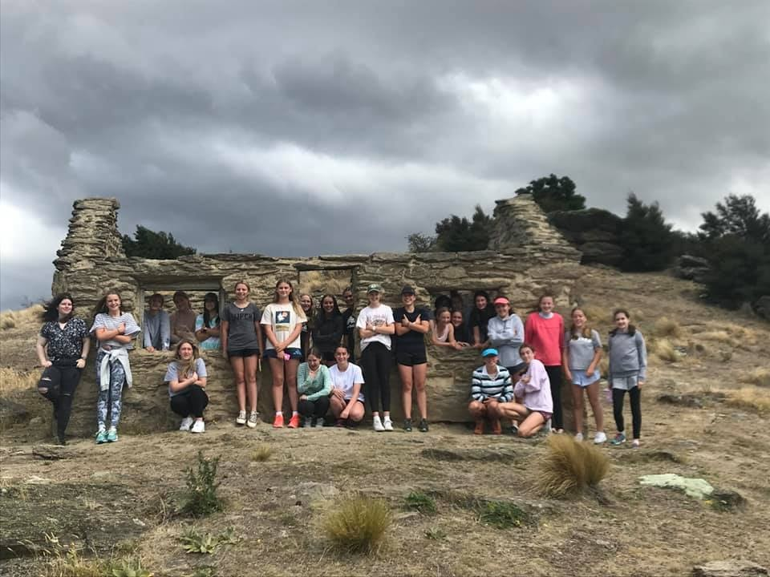
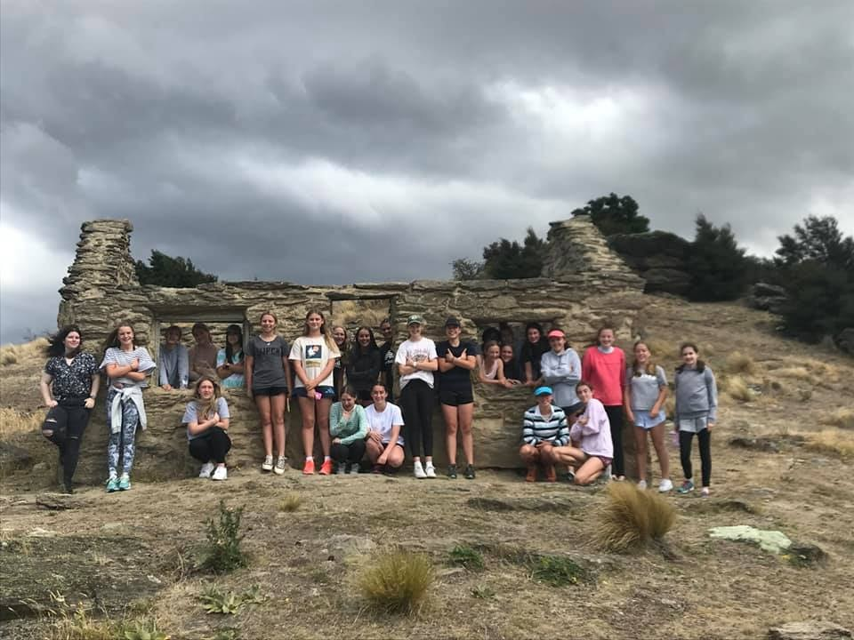
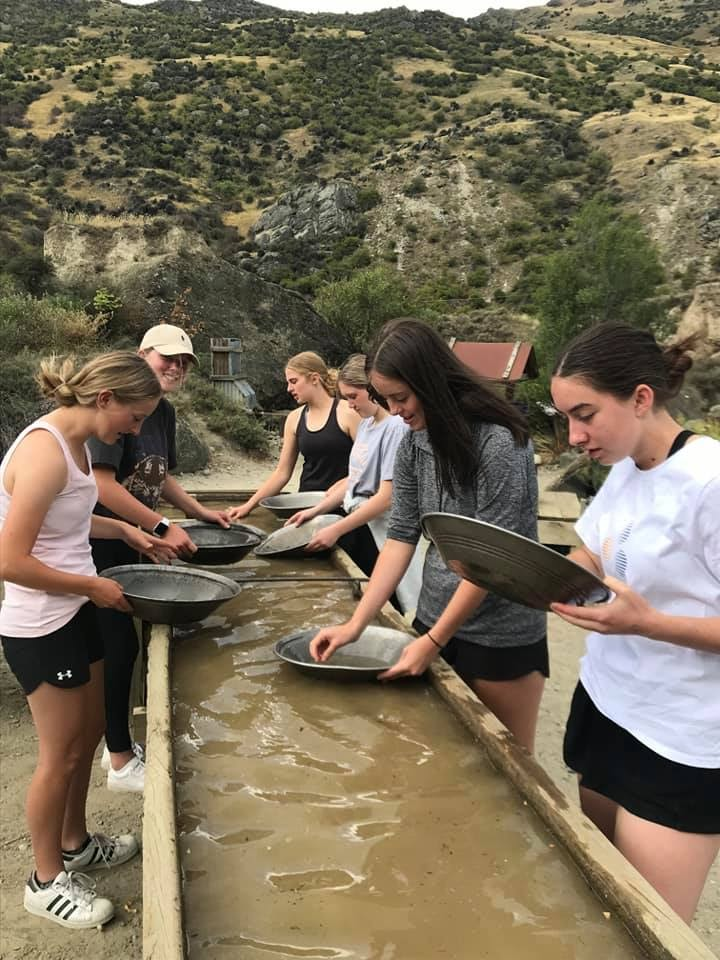
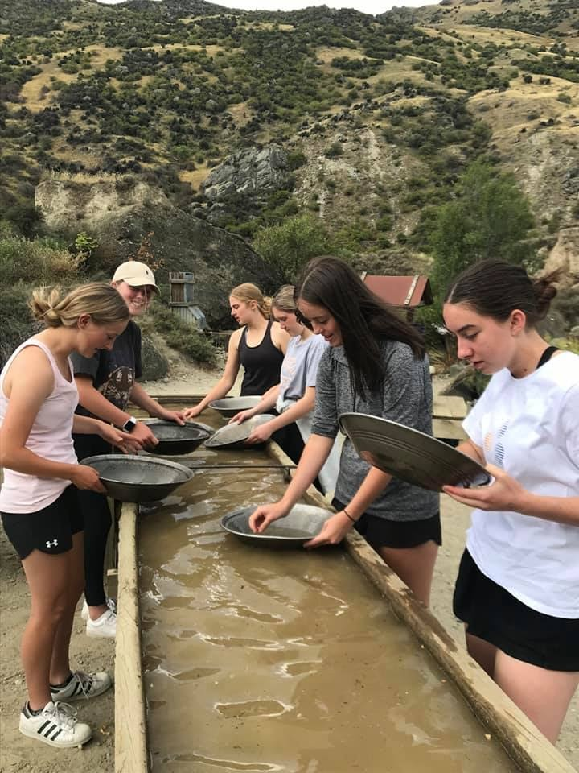
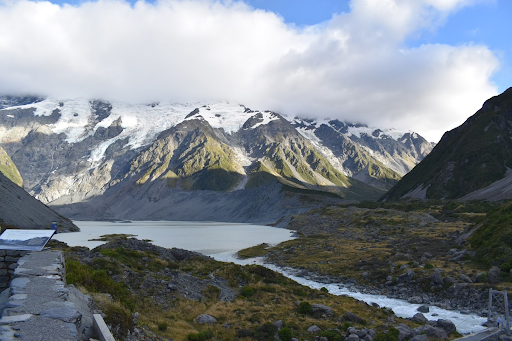
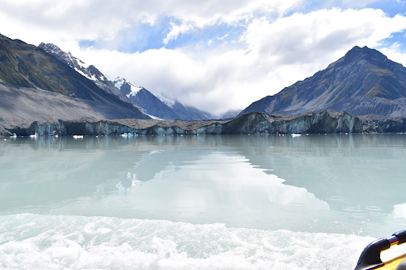
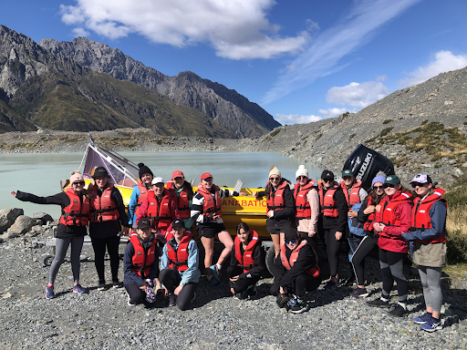
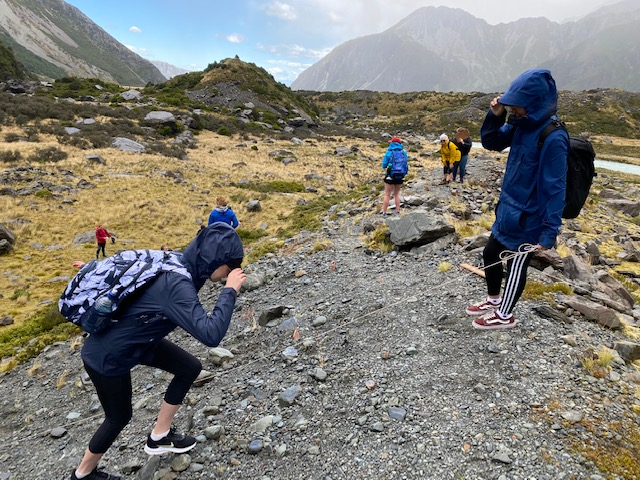
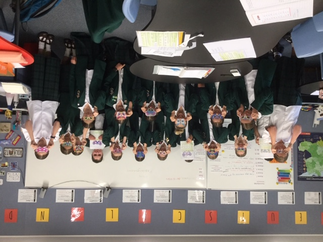

School News
Year 11 History Trip
Last week, Year 11 History students travelled to Arrowtown to gather resources for our History internals. On Wednesday, we went to Bendigo Goldfields and were provided with useful background information on the life of early miners and the dangers they faced. We visited the Goldfields Mining Centre, in the Kawarau Gorge. We all tried our hands at gold panning, although unfortunately nobody “struck it big”. Thursday was a busy and focused day for us, with access granted to the Lakes District Museum archives and a historical tour around Arrowtown, including the cemetery. Friday was spent visiting the Cromwell and Alexandra cemeteries and the Cromwell museum, to help with our internals. All the girls thoroughly enjoyed the trip and are grateful for the opportunities to explore Central Otago history. We would like to say a huge thanks to Mr Gibbs and Ms Reeves for driving the vans and putting up with us for three whole days, to the Dining Room staff for catering for us and to all the staff at Lakes District Museum, Goldfields Mining Centre and Cromwell Museum. Also, a massive thank you to Mrs Johnston for all the time and effort that went into organising this trip, as well as making sure it was enjoyable and informative.

 

 

Year 12 Geography field trip to Aoraki Mt Cook:
“Do something new, New Zealand” is something that we have heard a lot over the past 12 months since our borders have been closed due to Covid-19. Last week, the Year 12 Geography students were lucky enough to put this catch phrase into practise and get out and explore the beautiful Aoraki Mt Cook whilst of course working on internal, and external assessments. Over the two days, we conducted research on the vegetation in different areas of the National Park, saw the incredible Tasman Glacier from the Tasman Lake and put together smaller pictures of information we had learnt in class for everything to come together and make sense. We also had sessions with DOC to learn more about glaciation and their perspective on the controversial 1080. The Glacier Explorers boat trip to the glacier was definitely a highlight and although the weather was definitely not what we had hoped for, we all managed to have an amazing time and explore a new part of our country. We would love to say a massive thank you to Miss Gilbert and Miss Smillie for organising and facilitating the trip. Without your efforts, this trip wouldn’t have been possible. Rachel O’Brien Photos by Abby Crilly:
  Y12 Bio trip
Students from the Year 12 Biology classes gathering data on glacial moraines of the Mueller Glacier, at Aoraki/Mt Cook, last Wednesday. Weather conditions tested the students’ ability to record plant species in the field, with Alpine weather really demonstrating how volatile it could be. The students were recording data for the internal assessment on Identifying a Community Pattern they will be completing in the coming week.
Year 9 German
In the Year 9 German class, we have been learning about how the Fasching festival is celebrated around Germany and combining this with learning the colours so we can describe our colourful Faschingsmaske! Do you recognise the faces behind the masks?
